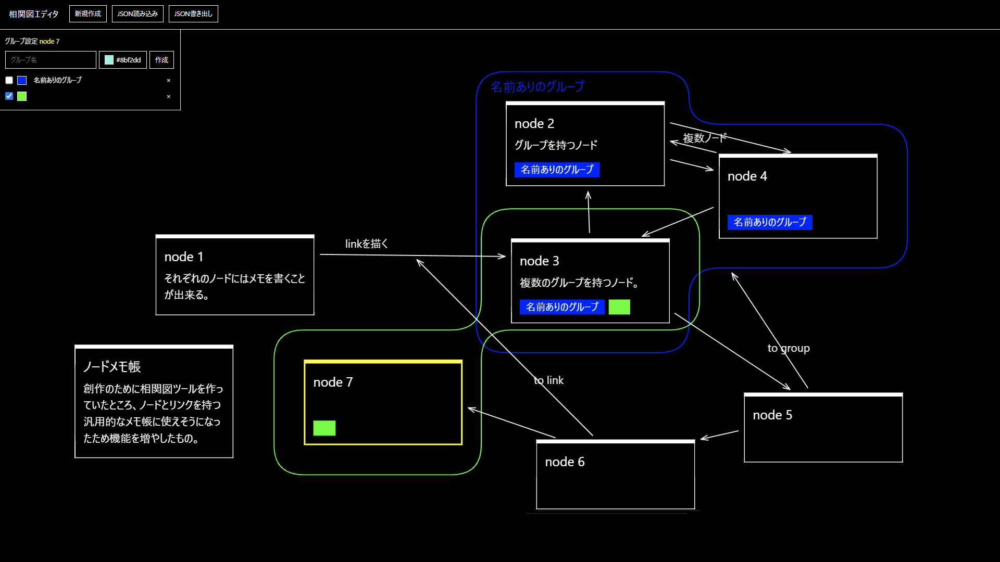

26年 7・8月 日記
目次
7月MV作った昭和パンクの調べ物非エンジニアのためのコード公開倫理ブログジェネレータの修正その他
8月
MV作ったり見たり「ボカロ特集：身体の未分化」のキュレーション協力ハンディスキャナを使った表現HTML Day 2026当該部活動の税納付における特別督促状 PVブログビルド方法とUXフォント制作映像プラグインまとめScrapboxノード型ポートフォリオ
7月
MV作った
7月はワンシチュエーション2DMVについて考えていました。カメラを持ち出したりプログラムを描いたりすることで技術的に新規性を作ることは出来るけど、そうではなくてAEやBlenderを使った通常の2DMV制作フローの中でもやれることはありませんか、と考えています。が、人手が要りますね…
- 初星学園 「歌声は君いろ」Official Music Video
- フラワーボックスをモチーフに紙芝居をしています。
- ちゅ、お注射。 / なみぐる feat.をとは somunia
- スマホの画面の中で進行する2DMVです。
ユメユメ - 二度音ウト
リミナルスペースをメインに据えネット美学全般をテーマに、ideoavesで折メ思案とともにアニメーションをしました。私のネット美学ミームモチーフはこれで一旦終わりだなと思っています。
昭和パンクの調べ物
- 50年代以降のハッカー文化。cDc、Blue box。
- TRPGの受容、クトゥルフ神話の翻訳本。
- コンピュータアート。Henry Drawing Machine、Michael Noll、Computer Technique Group。
もともとは黎明期CGのインプットのつもりでしたが、197Xという数字を見ると私は年表と単語帳を埋め始めてしまいます。ライフワークとして申し分ないのめり込みです。
IT関連の歴史：1次資料も書いてくれているためインターネット技術の早送りIFのSFについて考えていました。
例えば
| date | events | base |
|---|---|---|
| 1962/00/00 | 佐橋滋 『情報処理産業育成計画』 | なし。 |
| 1963/07/00 | 特振法 廃案（福田通産大臣の後押しもあり、この廃案を機に情報処理産業政策に舵を切った。） | 廃案のみ史実。 |
| 1963/09/17 | 情報処理産業育成基本方針を閣議決定 | 定例閣議のあった日。 |
| 1965/04/01 | 公衆電気通信法改正 | なし。1985年に電気通信事業法改正が行われた。 |
| 1981/08/12 | IBM PC 発売 | 史実。 |
| 1983/01/01 | ARPANET TCP/IPへ切り替え。 日米規格摩擦の本格化 | 史実。ただし日米規格摩擦ではなく通信自由を求める日米通信摩擦であった。 |
| 1985/04/01 | 電話自由化 | 電気通信事業法改正による通信自由化の日。 |
| 1985/10/00 | MOSS協議 | 史実。日米通信摩擦についての内容は異なる。 |
| 1988/00/00 | TCP/IP規格の標準化 | なし。 |
とすると、1985年の通信自由化を20年早めることができ、昭和40年代に法的にはネットワーク網の初期段階を用意するSFができます。
非エンジニアのためのコード公開倫理
AIでバイブコーディングしたツールの公開についての倫理を考える。「非エンジニアのためのコード公開倫理」という建付けで
- １．堅牢性を保証できないならば公開しない。
- ２．保守性を保証できないならば無償かつオープンに公開する。
- ３．メンテナとユーザーの時間を浪費しない。
としました。所謂オープンソース文化でのモラルをもっと強く拡張したもので、
私自身の具体例を出せば
「ログイン、何らかの送受信を機能として持つツールを公開しない。JSやpythonで作成したローカルな場で動くツールを、コードを容易に閲覧可能でPRの送られないような僻地としての個人サイト用Githubリポジトリに設置する。」
という立ち位置です。
これをすべての人に適用する事は考えませんが、個人信条として持っていて過不足ない倫理だと考えています。（少なくとも対応記載のあったバージョンでエラーの出るプラグインを数千円でBoothに置くよりも倫理的であると確信しています。）
ブログジェネレータの修正
ブログジェネレータの構文を抜本的に見直します。手書きサイトの名残でbrとdivのみを使うhtml構成にしていたのですが、internet 2（RSSとAPIを使ったSNS・ニュースサイト横断サイト。前述の公開倫理により公開していません）を作る過程でできるだけ内容に合ったタグに変えるべきと考え修正に入っています。現在はp段落や入れ子ulの箇条書きを対応させていますがspanにclassを当てている部分は他ページと干渉するため様子見しています。
HTML Energy関連の話ですが、私はhtml手打ちを趣味でやっている位置からずれる気がなくて、AIによってフロントの底に手が届くとしてもできるだけサイト自体の構造はhtmlを手打ちしている状態と大差なくしたいと考えています。
その他
相関図エディタ
相関図エディタをウェブのCanvas描画で作りました。またノードベースのメモ全般のバージョンも考え始めました。

生活
７月は後半1週間は重い頭痛があってほとんどベッドにいました。脳神経外科でMRIを撮ったのですが、今のMRIはミラー越しに映像を楽しめるようになっていて面白かったです。
8月
MV作ったり見たり
スリットスキャンのことを考えている月間が続きます。
吉田楓 - Kommune
歌詞デザインにモニターに写した文字をスキャナで歪めたものをつけました。ボカコレ参加作品でした。
Sou - Panorama
そもそも細いセンサー自体が面白くなって作りました。こちらはYMW参加のもの。
YMWでは後述の味醂さんのアシスタント、所属しているCDsのCDs WORKs 2025 - 2026への素材提供もあります。
「ボカロ特集：身体の未分化」のキュレーション協力
ひろしまアニメーションシーズンで特集上映＆ライブ「ボカロ特集：身体の未分化」のキュレーション協力に参加しました。ボカロMVの変遷に寄った部分、特に手法とルックの側面の話をしました。
他に味醂さん関連でYMWの椎乃味醂 - Live SetでBG担当箇所が写ったり、ボカコレの青（ft. 初音ミク）でアシスタントをやったりしています。
ハンディスキャナを使った表現

HTML Day 2026

当該部活動の税納付における特別督促状 PV
これ
ソシャゲのキャラ紹介みたいな映像から始まって、ステートメントで終わるPVです。チラシやVJスクリーンに出されるそれをモチーフにしています。
創作か否かを問わずデザインや映像の製作が可能です。
ブログビルド方法とUX
ブログジェネレーターをbuildとparserで分けてmjsに変更しました。昔のBlogのtxtも逆向きに変換して一旦は全体が共通になりました。（オリジナル記法parserを実装する泥臭い方法しか解らないので、もう少し勉強してからやるべきだった。）
https://ideoaves.github.io/blog/rss でRSSを読めるようにもしてみました。
私はちょっと自分の文化圏のウェブサイト全体について我慢の限界にきていて、たとえばYoutubeはアニメーション演出ジュエルギフトの機能がついてコメント欄の半分を覆うビガビガのアニメーションが出るのでCSSを
ytls-gift-overlay-item-view-model { display: none !important; }と書いたり、
Twitterはfor you欄はとっくの昔に消していますがプロフィール欄に行くと「ポスト」というバズツイートを上に並べる表示がデフォルトになっていてUserScriptsで直したりしていました。ユーザーにコードを書かせる必要を作るな。
ともかく、RSSやAPIを叩ける場所を集約して私だけのウェブサイトに引きこもる時間がどんどん増えています。同様の人たちのためにもRSSを最低限生やしておくことは大事だろうなと思っての実装です。
それになんだか小さなパラボラアンテナを生やした気分でちょっと楽しいですし。
フォント制作
映像プラグインまとめScrapbox
https://scrapbox.io/video-plugin-archive
バイブコによるプラグイン/スクリプトの制作が加速しきっていて今後困りそうだったので集積を考えました。私のDiscordでは時々Scrapbox人海戦術が行われています。
ノード型ポートフォリオ
ノードポートフォリオ
ノードポートフォリオを考えて、JSON Canvas規格を採用して作り始めました。
リファレンスや影響、関連性に重きを置いたポートフォリオです。いうなればアンチオリジナリティポートフォリオ。